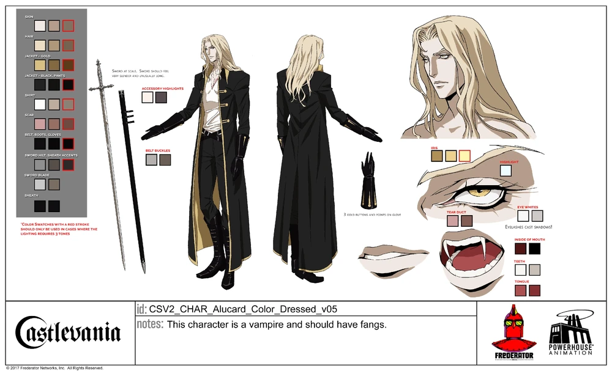
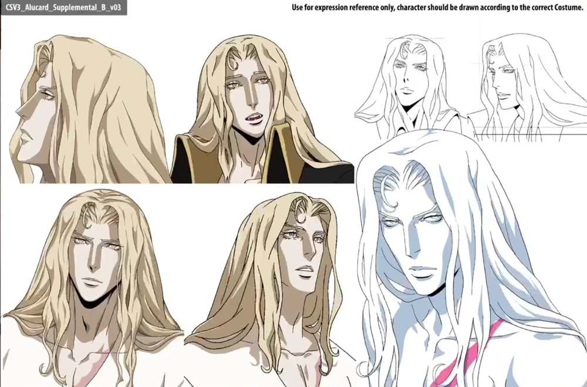
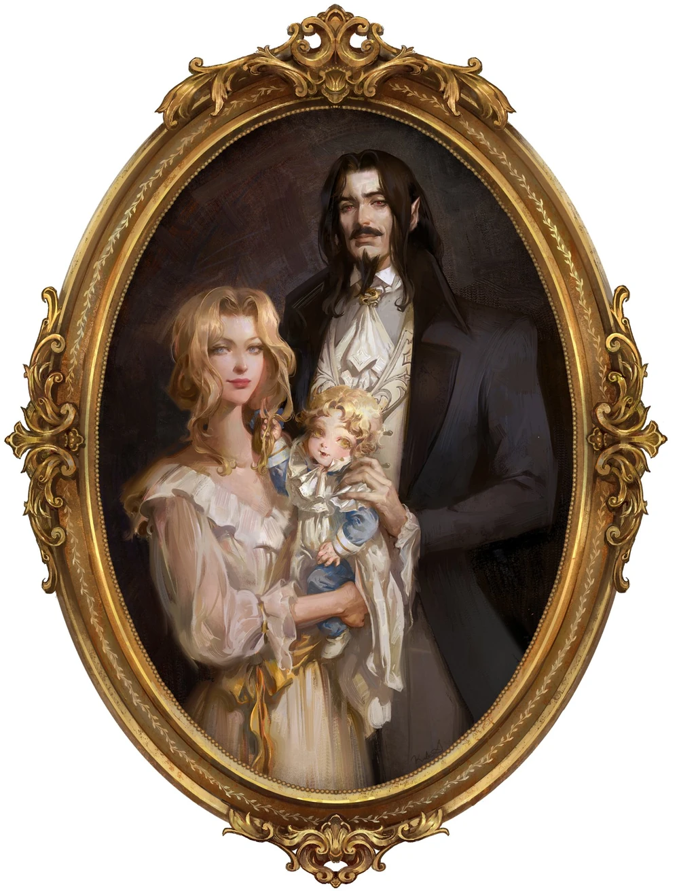

Alucard, the Only Son of Dracula
Character Information and Fun Facts
By Camryn Furr, 7/1/26

Alucard Model Sheet Castlevania Netflix Series
Character Background
Alucard (Adrian Tepes) is the son of Vlad Dracula Tepes and Lisa Tepes, originally appearing in the 1989 Nintendo Game Castlevainia III: Dracula's Curse. His character was later reintroduced in Symphony of the Night which is his better known appearance.
Alucard is in an odd spot being a dhampir (half vampire half human). He is stronger than a human, but weaker than the average vampire. After his was killed, having been mistaken for a witch, while practicing medicine and modern sciences, Adrian grew up taught by his father, who taught him the dark arts and trained him as a warrior who would eventually fight for evil.

Alucard Expression Sheet Castlevania Netflix Series
Fun Facts
- Alucard's Sword in the Netflix series is straight from the Castlevania games. It allows him to fight at a distance as well as teleport, giving him the upperhand in combat.
- Something most fans end up overlooking is that Alucard's title is Dracula spelled backwards. He picked it as a direct opposition against his father.
- His design in Castlevania: Nocturne is drastically different than the one in the original Netflix Series. It was changed to be much closer to that of the Symphony of the Night design, which widely popularized his character in the first place.
